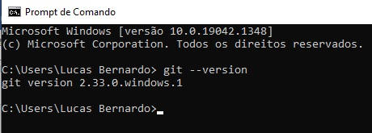
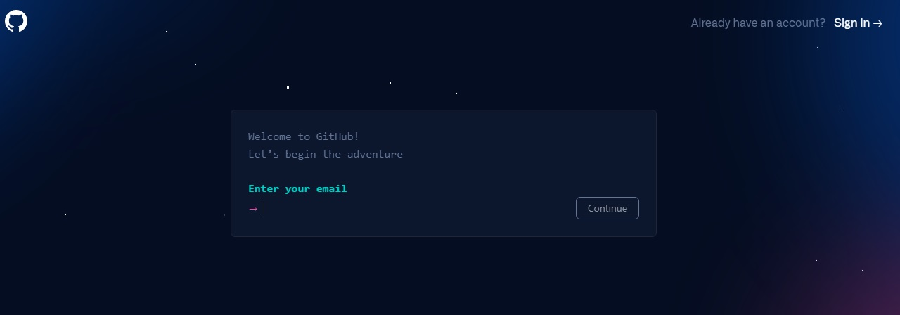
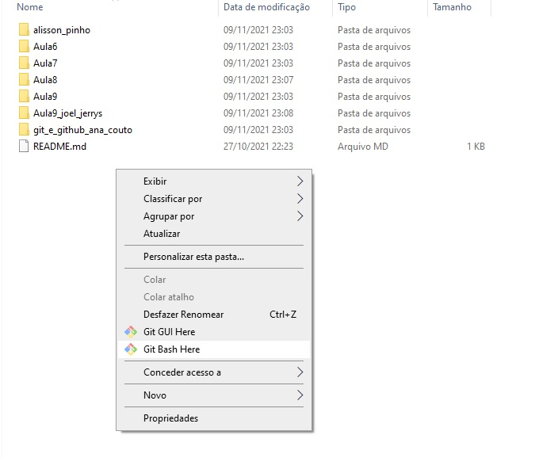

Configurando Git e GitHub
Git é um sistema de controle de versões distribuído, usado principalmente no desenvolvimento de software, mas pode ser usado para registrar o histórico de edições de qualquer tipo de arquivo.
A primeira ação a se fazer é verificarmos a existência do GIT no nosso sistema operacional, no terminal do computador, utilizando o git –version. Se ele não estiver instalado, temos que instalá-lo.
Para cada sistema operacional há formas diferentes de instalar o GIT.
No Linux, há várias formas, uma delas é através de uma distribuição baseada em Debian como o Ubuntu. E no terminal utilizando o comando:
sudo apt-get install git-all
No Mac, também há várias formas, uma delas é utilizando o Homebrew, e escrevendo no terminal o seguinte comando:
brew install git
Já no Windows utilizamos o GIT BASH, para emular o ambiente BASH, criado através do comando "git" no Linux e Unix.
Feito isso, vamos para o próximo passo. Sabemos que cada diretório de trabalho do Git é um repositório com um histórico completo e habilidade total de acompanhamento das revisões, não dependente de acesso a uma rede ou a um servidor central. Mas para que outras pessoas possam ter acesso a esse repositório, podendo acompanhar as revisões e adicionar suas próprias alterações, utilizamos um serviço online de hospedagem de repositórios Git, o Git Hub.
Após criar uma conta no site do GitHub, precisamos nos identificar no Git para que todos pontos na história tenham nossa assinatura. Executamos os dois seguintes comandos no terminal, com o nome e e-mail respectivamente:
git config --global user.name "Seu nome"
git config --global user.email "seu-email@example.com"
Depois disso, em uma pasta vazia vamos indicar que utilizaremos Git nesse projeto com o comando:
git init
Done!!